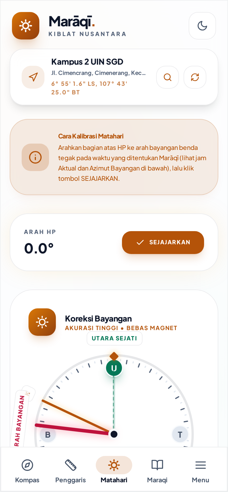
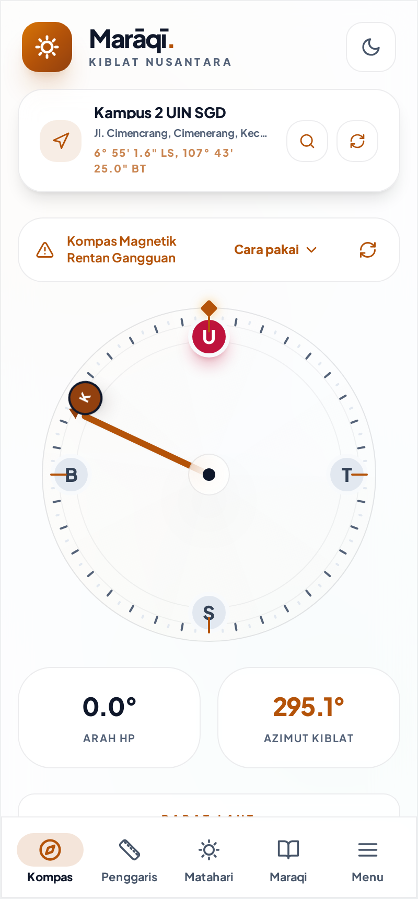
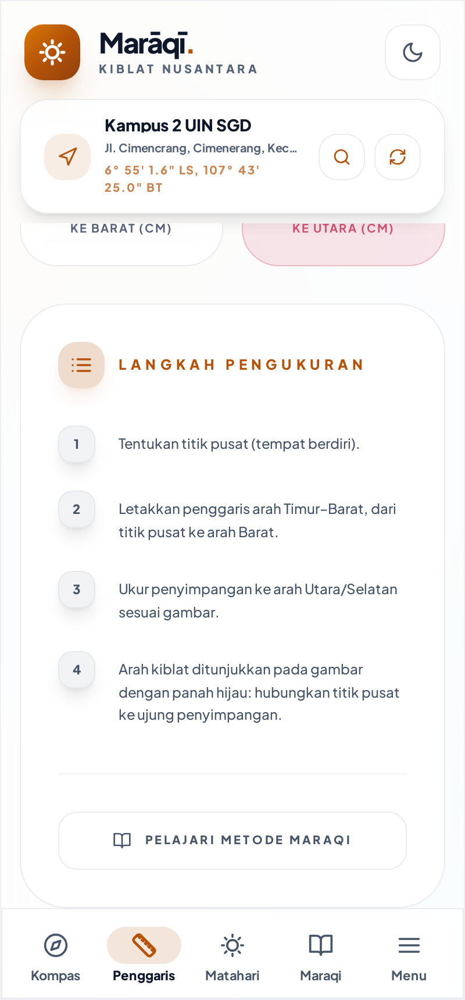
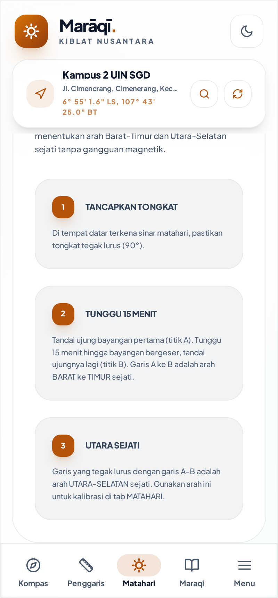
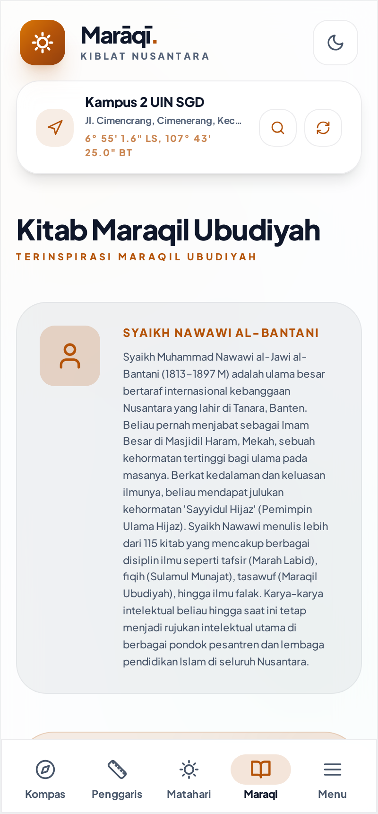
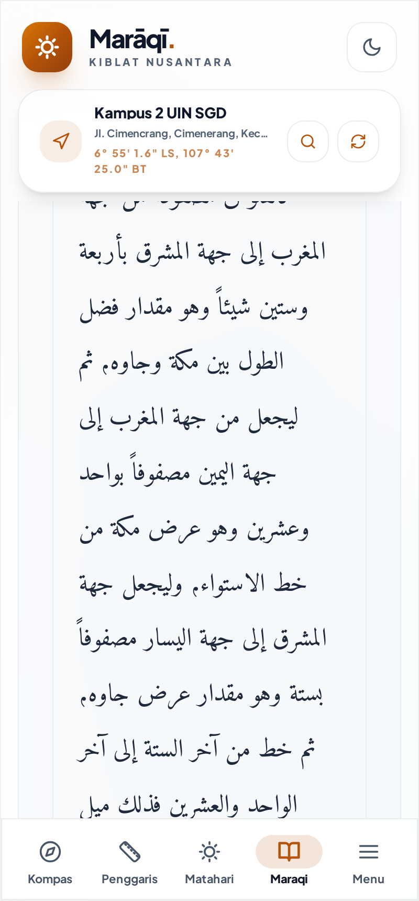
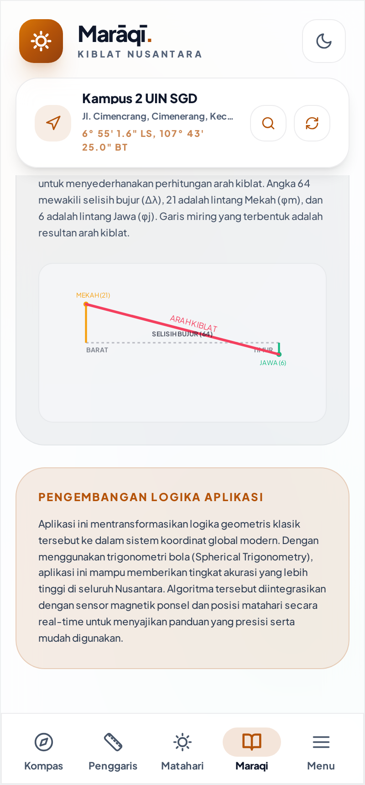
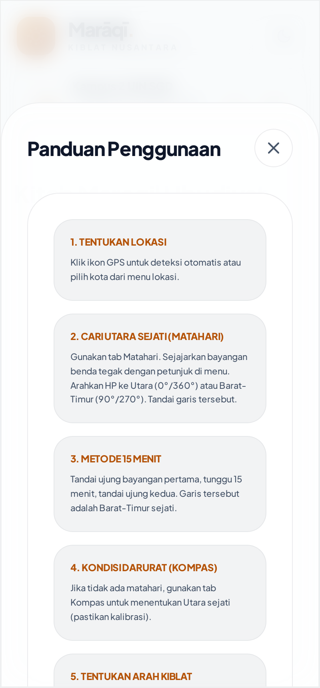
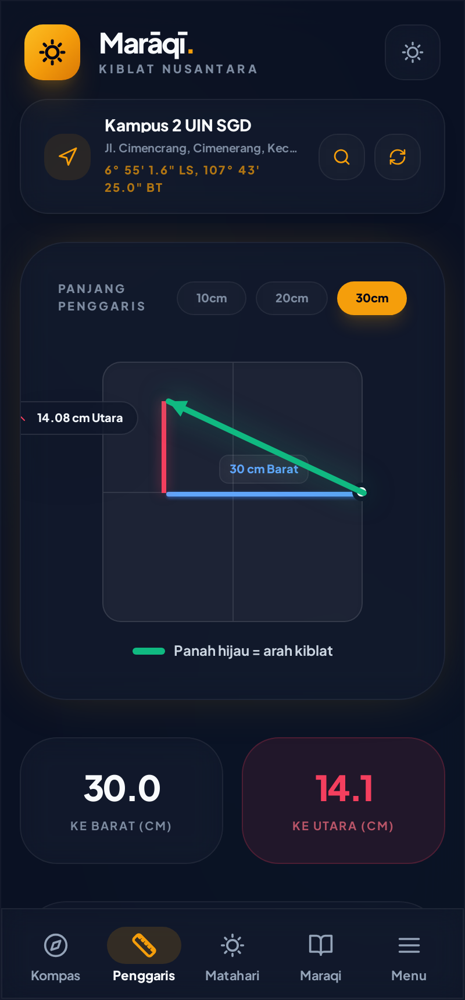

Presisi yang bisa dipertanggungjawabkan
Marāqī dikembangkan melalui penelitian Litapdimas Kementerian Agama RI dan diuji secara komputasi serta oleh para ahli.
Kenapa memilih Marāqī?
Bukan sekadar penunjuk arah: Marāqī memadukan turats ulama Nusantara, ilmu falak modern, dan alat ukur sederhana.
Berakar pada kitab
Metode koin Syekh Nawawi al-Bantani dalam Marāqil ‘Ubūdiyyah dihidupkan kembali sebagai metode penggaris.
Presisi bola bumi
Arah kiblat dihitung dengan trigonometri bola dari koordinat GPS Anda, bukan perkiraan arah barat.
Utara sejati dari matahari
Kalibrasi dengan bayangan benda tegak, sehingga bebas dari gangguan magnet besi, kabel, dan pengeras suara.
Waktu bayangan kiblat
Jadwal harian saat bayangan benda tegak tepat menunjuk atau membelakangi kiblat di lokasi Anda.
Sekaligus belajar falak
Teks Arab, terjemahan, penjelasan geometris, dan panduan langkah demi langkah. Cocok untuk pesantren, madrasah, dan kampus.
Gratis & menjaga privasi
Tanpa iklan, tanpa akun, bisa dipakai tanpa internet. Lokasi Anda dihitung di HP dan tidak dikirim ke server.
Tiga cara menentukan kiblat
Pilih metode sesuai keadaan, lalu periksa silang dengan metode lain untuk hasil yang paling meyakinkan.
Penggaris
- Tentukan titik pusat, tempat Anda berdiri.
- Letakkan penggaris arah timur–barat, dari titik pusat ke arah barat.
- Ukur simpangan ke utara sesuai angka di aplikasi.
- Hubungkan titik pusat ke ujung simpangan: itulah garis kiblat (panah hijau).
Bayangan matahari
- Cari benda tegak yang terkena sinar matahari: tiang, tongkat, atau kusen pintu.
- Arahkan bagian atas HP searah bayangan benda tegak.
- Tekan SEJAJARKAN; kompas terkoreksi kini menunjuk utara sejati.
- Gunakan kompas terkoreksi, atau tandai bayangan pada jam “Bayangan ke Kiblat”.

Kompas
- Tekan tombol GPS atau pilih kota terdekat.
- Pegang HP mendatar, jauh dari benda logam, pengeras suara, dan kabel listrik.
- Putar HP hingga jarum kompas mengarah ke indikator Kiblat (K).

Dari koin Syekh Nawawi ke trigonometri bola
Dalam Marāqil ‘Ubūdiyyah, Syekh Nawawi al-Bantani menyusun koin membentuk segitiga siku-siku. Garis miringnya adalah kemiringan kiblat bagi penduduk Jawa.
Marāqī mempertahankan cara menggambar garis ini di lantai, tetapi menghitung arahnya dengan model bola bumi dari koordinat GPS, sehingga berlaku di seluruh Indonesia.
Tampilan aplikasi
Tersedia tema terang dan gelap. Geser untuk melihat semua layar.







Tim peneliti
Marāqī adalah luaran Bantuan Penelitian Pengembangan Kajian Keislaman (Litapdimas, Kementerian Agama RI) 2026, dikembangkan bersama KAFFAH (Komunitas Astronomi dan Falak Fakultas Tarbiyah) UIN Sunan Gunung Djati Bandung.
Tentukan arah kiblat dengan yakin
Gratis untuk Android 8.0 ke atas. Tanpa iklan, bisa dipakai tanpa internet.
Unduh Marāqī di Google PlayKebijakan privasi singkat
Marāqī memakai lokasi perangkat hanya untuk menghitung arah kiblat dan waktu bayangan di perangkat Anda. Koordinat tidak dikirim ke server pengembang dan tidak disimpan di luar perangkat. Bila tersedia koneksi internet, aplikasi dapat meminta nama alamat dari koordinat melalui layanan Nominatim (OpenStreetMap) atau BigDataCloud. Aplikasi tidak memuat iklan dan tidak memakai pelacak pihak ketiga. Baca kebijakan privasi lengkap.